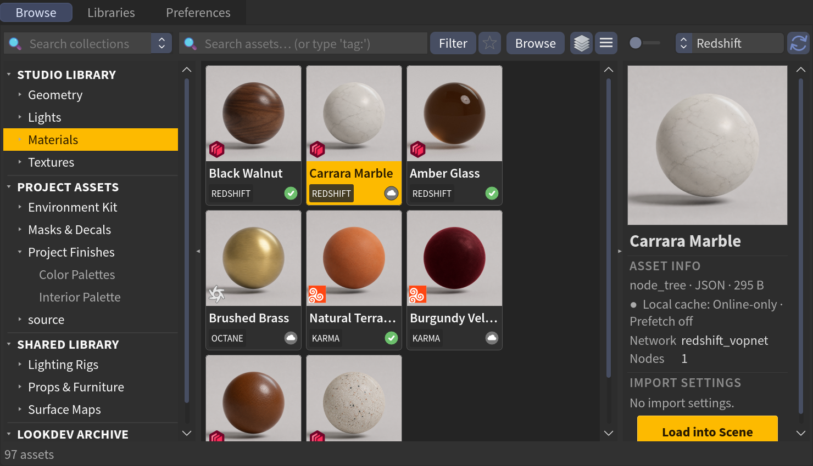
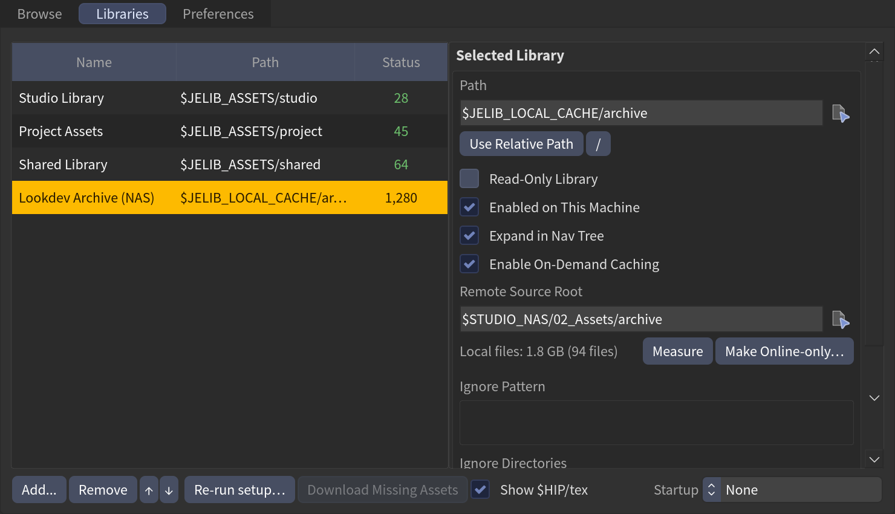

Remote & cloud libraries
Your libraries don't have to live on the local disk. JElib works with libraries on cloud storage (Dropbox, Google Drive, OneDrive, iCloud, Synology Drive) and on a NAS / remote source — including files that are online-only (no local copy yet). It scans them safely and pulls files down only when you actually use them.
Two flavours
- Cloud-sync folders (Dropbox / Drive / OneDrive / iCloud / Synology Drive) — files may be online-only placeholders. JElib browses them and pulls on load. Cloud is pull-only — it can fetch a placeholder but can't evict it back.
- NAS / remote source with on-demand caching — a master copy lives on the remote; a local cache mirrors it as you use assets. This one you can pull and push back to online-only.
Safe scanning
JElib scans cloud and NAS libraries from their file listing only — reading small metadata and existing preview images, never the heavy textures/geo/HDRIs. So adding a big cloud library won't mass-download it. Heavy files stay online-only until you load them.
Availability at a glance
Every asset shows where it lives:

| Where you see it | Meaning |
|---|---|
| Grid tile — ✓ dot | Synced locally, ready |
| Grid tile — ☁ dot | Remote-only but reachable, hydrates on load |
| Grid tile — ! dot | Remote unreachable — can't load until reconnected |
| Preview panel | ● Local cache: Synced / ● Local cache: Online-only — and while a prefetch runs, a live Prefetching… X / Y MB that turns Synced when done. With prefetch off it reads Online-only · Prefetch off. |
| Libraries tab, Status | Cloud = folder present but empty (still syncing/paused) |
Hover the ☁ dot for a plain-language reason (e.g. Online-only — files download on first load).
Loading pulls it down
Import an online-only asset and JElib downloads it first, then wires it up:
- Cloud placeholders hydrate before the import with a cancelable Downloading… X / Y MB dialog. If the source is offline it stops cleanly and loads nothing, rather than half-importing.
- NAS / on-demand libraries download in the background — keep browsing while the files pull; the import fires the moment they land. Load more assets and they queue behind it. The preview panel's cache line tracks progress (Caching Asset… X / Y MB · 1 queued · Esc cancels); Esc cancels the download and every queued import, and switching to a different scene cancels them too — an import never lands in a scene you didn't load it into. Files that finished downloading stay cached either way.
Prefetch while you browse
Turn on Prefetch Selected Cloud / NAS Assets (Preferences → Caching) and JElib starts pulling the selected asset in the background as you browse, so dropping it is instant. The preview panel's cache line counts it down live (Prefetching… X / Y MB → Synced).
Make available offline / online-only
Right-click assets in the grid (or a library in the nav tree):
- Make Available Offline — pull the selected assets local ahead of time.
- Make Online-only — (NAS libraries only) delete the local copies to reclaim space. JElib only removes files it has verified still exist on the remote — it never deletes your only copy.
To manage a whole library at once, use Measure / Evict Library… in the Libraries tab inspector — same safety rules, applied library-wide.
Setting up an on-demand (NAS) library
Two paths are involved, and it matters which is which:
- Remote Source Root — where the master files live (the NAS/remote path). JElib only ever reads from here.
- Path (the library's normal path) — the local cache on your machine's disk. Files copied here as you use assets; imported nodes always reference this path, never the NAS.
The two must mirror the same folder structure — JElib maps a file between them by its relative path. For example:
In the Libraries tab inspector:

- Tick Enable On-Demand Caching.
- Set Remote Source Root to the NAS path. The library's Path stays your local cache folder (it can start empty — it fills as you load assets).
On-demand caching is a per-machine opt-in (your package JSON sets
JELIB_ONDEMAND_CACHE), so the same synced config can cache on one machine and read
direct on another.
Machines without the remote variable just work
If a library's Remote Source Root starts with a variable that isn't set on the
current machine (say $STUDIO_NAS on a laptop that has everything local), JElib
simply reads the library from its local folder — live, with no warnings. The
only trace is a note on the count in the Libraries tab. Scans on such a machine
aren't cached, so set the variable (or clear the Remote Source Root) if it's
meant to be permanent.
One config, many machines
JElib stores library paths relative to a per-machine base variable, $JELIB_ASSETS,
so a single synced config resolves everywhere:
- Each machine points
$JELIB_ASSETSat wherever its copy of the assets lives (set on first run, or edit it in the package JSON). - Library paths are written
$JELIB_ASSETS/<name>— use Use Relative Path in the Libraries inspector to convert an absolute path to the portable form. - Sync
user_libraries.jsonandfavorites.jsonbetween machines; every library resolves against each machine's$JELIB_ASSETS.
The first-run setup detects cloud providers (Dropbox, OneDrive, Google Drive,
iCloud Drive, Synology Drive) and offers them as one-click picks. For a NAS mirror, point the
optional $JELIB_ASSETS_REMOTE at the remote and JElib derives each library's
remote from its local path — no per-library setup.
Bringing up a second machine, step by step:
- Install JElib as usual (see Installation).
- On first run, pick (or edit in the package JSON) where this machine's assets
live — that becomes its
$JELIB_ASSETS. - Copy or sync
user_libraries.jsonandfavorites.jsonfrom the first machine. - If this machine caches from a NAS: set
$JELIB_ASSETS_REMOTEto the NAS base andJELIB_ONDEMAND_CACHE = 1in the package JSON. A machine that has everything locally just leaves caching off — same config, no changes. - Open the browser — libraries resolve against this machine's
$JELIB_ASSETS; the shared scan cache means no full first-scan of a big synced library.
Enable per machine
Enabled on This Machine (Libraries inspector, or Disable on This Machine in the nav tree) turns a library on or off for this computer only — your synced library list and favorites are untouched.
Good to know
- A plain Reload click always fully re-checks every NAS library by default. This is deliberately the safe, accurate choice — it reflects whatever's actually on the NAS right now, even though a full re-check is exactly as slow as a NAS-backed library is to browse in the first place. New or removed files always show up after a Reload, with nothing to configure.
- If a library is basically frozen and you'd rather trust the last scan for speed, right-click it in the nav tree → Trust Cache on Reload. Once on, a plain Reload click for that library skips the network check entirely and just shows what was last saved — fast, but it won't notice anything added, changed, or removed on the NAS until you force a real check: Shift- or Ctrl-click Reload (forces every library, ignoring this setting), or right-click the library → Reload This Library (forces just that one — this option also ignores Trust Cache on Reload, it's always a real check). Turn Trust Cache on Reload back off any time to go back to the always-accurate default. Off by default on purpose, same reasoning as Trust Cloud Library Cache below — a stale cache should never be served silently unless you've explicitly asked for that trade-off.
- If you never touch part of a vendor library on this machine (a
Greyscalegorilla
hdrisfolder on a laptop, say), right-click that folder in the nav tree and uncheck Scan on This Machine — a whole type folder or a single vendor collection. That subtree is never walked, cached, or thumbnailed here again; it stays in the tree as a dimmed (not scanned) entry so you can turn it back on from the same place. Saved per machine — your other machines keep scanning it. - Cloud-sync libraries (Dropbox/Drive/OneDrive/iCloud/Synology Drive) are fully re-checked on every reload by default — same as a plain local library, just slower the bigger/more-remote the library is. If that's too slow and you'd rather trust the cache instead, turn on Preferences → Caching → Trust Cloud Library Cache Without Verifying — once on, these libraries behave exactly like the NAS case above: a plain Reload click won't notice new/removed files, only Shift/Ctrl-click Reload or a per-library force-reload will. Off by default on purpose — an already-existing but wrong/outdated cache can otherwise get served with nothing telling you it's stale.
- Only the asset's primary files are pulled. A USD asset that references other files internally, or a saved node-tree material with external textures, pulls its main file — the rest resolve from the remote or may be missing locally. After a load, the cache status line reports anything that stayed remote.
- Online-only
$Fimage sequences can't be pulled yet — they keep the cloud indicator. - Pulled files accumulate — there's no automatic local eviction (use Make Online-only on NAS libraries to reclaim space).